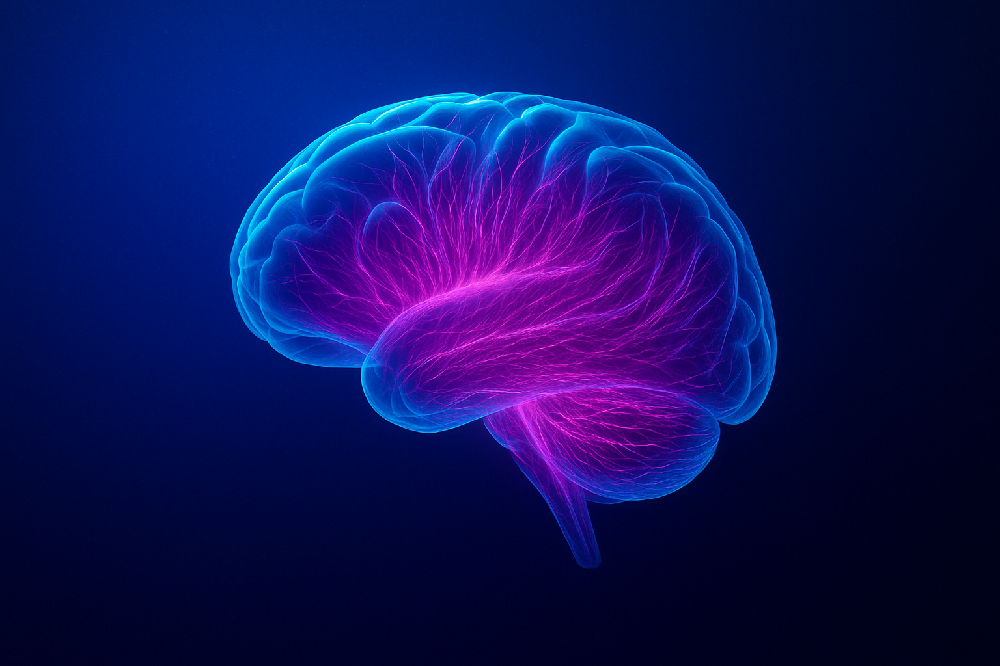

Computational Neurology
Club
計算論的手法を用いて、アルツハイマー病・パーキンソン病・てんかんなど 神経内科疾患の病態理解と臨床応用をめざすコミュニティです。
2ヶ月に1回のオンラインセミナーを通じて、学生・研究者・臨床家が分野を越えて議論する場を提供します。

Upcoming Seminars
次回のセミナー情報
疾患進行の「速さ」と「進み方」を分解する：縦断的臨床データから読み解く神経変性疾患進行の個人差
- 講演者
- 矢田 祐一郎 東海国立大学機構 名古屋大学 大学院医学系研究科 データ駆動生物学分野
- 日時
- 2026年6月9日（火） 13:00–14:30 JST
- 会場
- オンライン (Zoom)
神経変性疾患ではしばしば患者によって進行の仕方が大きく異なる。この疾患進行における個人差を理解することは、病態理解、予後予測や、臨床試験の設計において重要である。本講演では、患者の縦断的臨床データを用いて、疾患進行の「経路」と「速度」を分離して推定する機械学習手法DiSPAHを紹介する。DiSPAHは、観測される臨床データを潜在的な疾患状態から生じる観測値とみなし、連続時間隠れマルコフモデルに患者ごとの進行速度パラメータを導入したモデルを用いて、各患者の潜在状態遷移と進行速度を推定する。さらに、推定された状態系列をクラスタリングすることで、異なる機能低下パターンをもつ進行経路を同定できる。筋萎縮性側索硬化症（ALS）患者の機能指標であるALSFRS-Rスコアの縦断データに適用した結果、DiSPAHにより推定された速度と経路は、将来の機能低下リスクや遺伝・分子情報と関連し、ALSの不均一な進行を理解するための有用な枠組みとなる可能性が示された。
Computational Neurology：脳内異常タンパク質伝播の理論と実験
8:45–10:45 JST
（神戸国際会議場 5階 502）
Organizers / 企画
Speakers / 演者
第49回日本神経科学大会（NEURO2026）にて、Computational Neurology Club of オーガナイザーが企画するシンポジウムが開催されます。脳内における異常タンパク質伝播のダイナミクスについて、理論モデルと実験的アプローチの双方から最先端の知見を議論します。学会にご参加の皆様はぜひ足をお運びください。
About
Computational Neurology研究会は、計算論的な立場から神経内科疾患を体系化し、新たな学問領域として確立することを目指しています。
計算論的神経科学（Computational Neuroscience）は数理的アプローチを用いて脳や心を研究する分野です。計算論的精神医学（Computational Psychiatry）は、この中で統合失調症などの精神医学を扱う領域で、同名の国際雑誌（Computational Psychiatry）が刊行され近年国際的にも認められる分野となっています。
一方で、アルツハイマー病やパーキンソン病といった神経変性疾患、てんかんや脳卒中など神経内科学に属する疾患に関しては、まだ計算論的な立場からの体系化が十分ではありません。
本研究会では、2ヶ月に1回の開催を通じて日本における関心を調査し、強固なコミュニティを作成することを目標にしています。学生、研究者の参加を歓迎します。